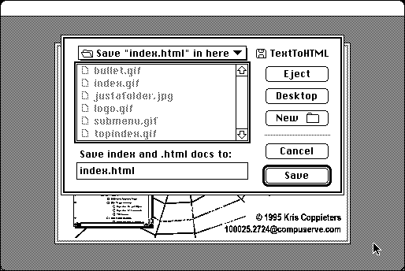

Download
TextToHTML134.zip (1.1M) TextToHTML 1.3.4b repackaged into a zipped hfs disk image and checksum file. The disk image can be mounted with Mini vMac.
TextToHTML134.bin (1.2M) TextToHTML 1.3.4b in the original format.
copyright: Kris Coppieters
mod date: Aug 1, 1996
license: freeware
last known url
(gone)
Converts “text or RTF files dropped onto its icon into HTML format”. “requires system 7 or higher”.

If you find these downloads useful, please consider helping the Gryphel Project, which hosts them.
Here are the md5 checksums for the downloads, signed with Gryphel Key 5:
--------- GRY SIGNED TEXT --------- 61d60ed2c4d9bebe050253fd20ec7565 TextToHTML134.zip a332cf9a0221ee6f52b65192f991c954 TextToHTML134.bin ------- BEGIN GRY SIGNATURE ------- Gry/4Xa8CFcUzxdN/F+2YfqKDemjyUdTzh5KGAZv954VCZUT9TG9eEdgDoPGnj+Z 7Ht9pw0FGoqhosKjZIW1D2p7AqjhIyekKerZtmKaznA0WMi3M+3BFMDgU0tHUUaO dDydKvNqf4mkhkv5T9kjC5y2S9m4WL1gz13FLzOEtj6qflasFVDqXyxsLwiwW7pV -------- END GRY SIGNATURE --------